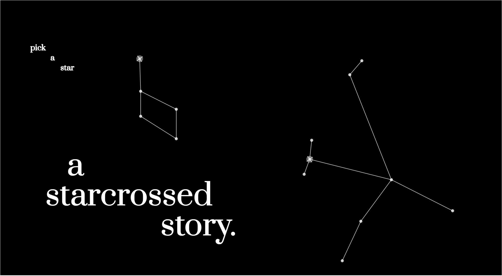
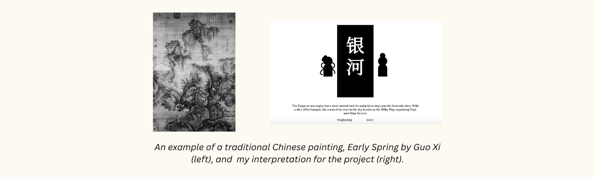
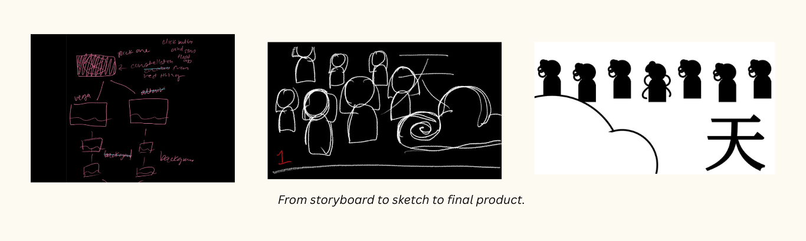
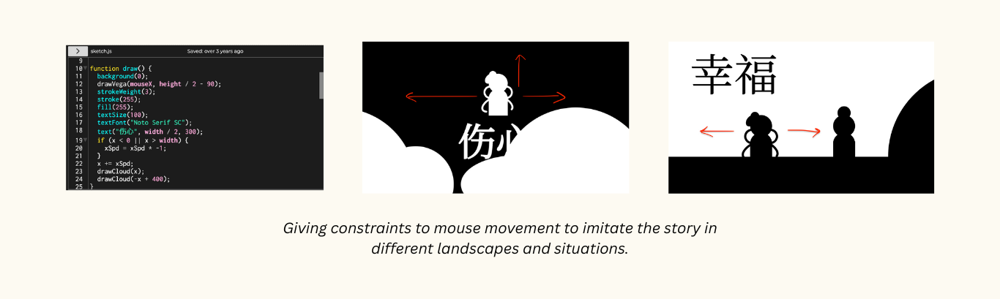
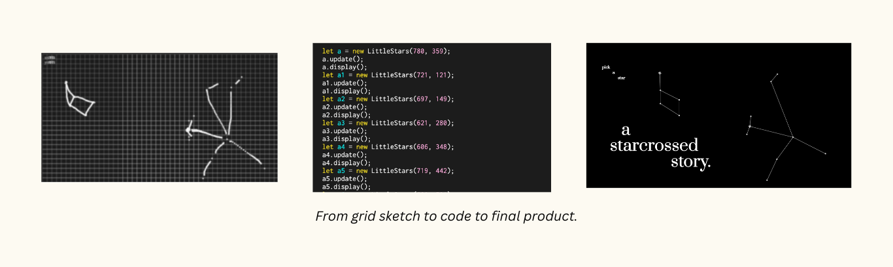

Date: May 1, 2022- May 13, 2022
Role: Designer, Coder
View Project Here
A Starcrossed Story is my retelling of a century old Chinese myth about the two stars Altair and Vega and the origin of the Milky Way. As someone who loves bridging tradition with modernity, it felt natural to transform this story into an interaction based webpage that people everywhere can look at and play with. Traditionally, Chinese stories are told from an overarching, omnipresent perspective, so I wanted to zoom into the two individual perspectives to really understand the two characters. Through Altair’s perspective, users can scroll horizontally through the story to connect the heart halves. Through Vega’s perspective, users can interact with the story panels by clicking or moving their mouse.
This project was created for the class Creative Coding Lab at New York University, and my aim was to incorporate all that I have learned that semester into a final product that speaks back to my Chinese heritage and my artistic influence from Chinese calligraphy and watercolor paintings. As this is a solo project, I took on the roles of both the designer and coder, planning and executing the process from start to finish.
I researched Chinese art from both a theoretical and practical perspective. A lot of traditional paintings highlight the mountains and water, some detailing nature with one simple brush stroke that I tried to replicate so many times in calligraphy class. Brushstrokes are soft, malleable, but also certain and sure. I wanted to contrast this softness, but still translate this simplicity into the code. I was curious about how to keep certain traditions in a technological focused world, hence I created these simple black and white character silhouettes and scenery, only adding color to certain mouse interactions from the user. I really like the idea that we have traditions in place, but we can be the ones to add “color” or something innovative to what we have always known, to create something that encapsulates our histories and futures.
I had a whole process of writing, storyboarding, and wireframing the design, which was so fun because I got to be very strategic about the classes that I would create for each object so it would be easier to manipulate them across the changing scenes.
I also focused a lot on the interaction part. For example, in the part where Vega is together with Altair, she can be moved across the land with the movement of the mouse towards him. However, during the part where she is forced to return to heaven, she can move up, right, and left but not down beyond the clouds, showing how she is trapped. The user can’t help her move past the clouds either, which really pushes them to empathize with the range of constraint and freedom in the story. As the creator of this project, I also felt the same emotions. When writing the HTML and CSS code to place the story on a webpage, I found that I needed to add many constraints to the panel so that a mouse interaction outside of the panel wouldn't trigger the interaction, but at the same time I felt so much freedom that I could create something from just my brain and lines of code.
This project also tested my problem solving skills and creativity because I encountered many bugs in my code, and I had to figure out the most efficient way to code the project in a limited amount of time. To streamline the coding process of the Start Screen, I first found a picture of the constellations I wanted to use. Then I used an already made p5.js grid that showed the x and y positions of the mouse, added some code so I could draw out the mapping of the stars. This helped me be more efficient because it gave me all the coordinates I needed without having to repetitively try different x and y positions in the code.
I received great feedback from my professor and classmates on the creativity and the seamless usability of the webpage, and was featured in our end of the semester showcase! This project has helped me learn more deeply about the artistic aspect of my culture and bring this story to more people, which I would say, met my initial goals. But something that really moved me was an email I received about my project, telling me how she felt the thought and care I had placed into my creations. From that moment, I felt the power of combining storytelling and technology to create these deep connections and relationships.
If you liked this, check out some of my other creative coding endeavors here and here!